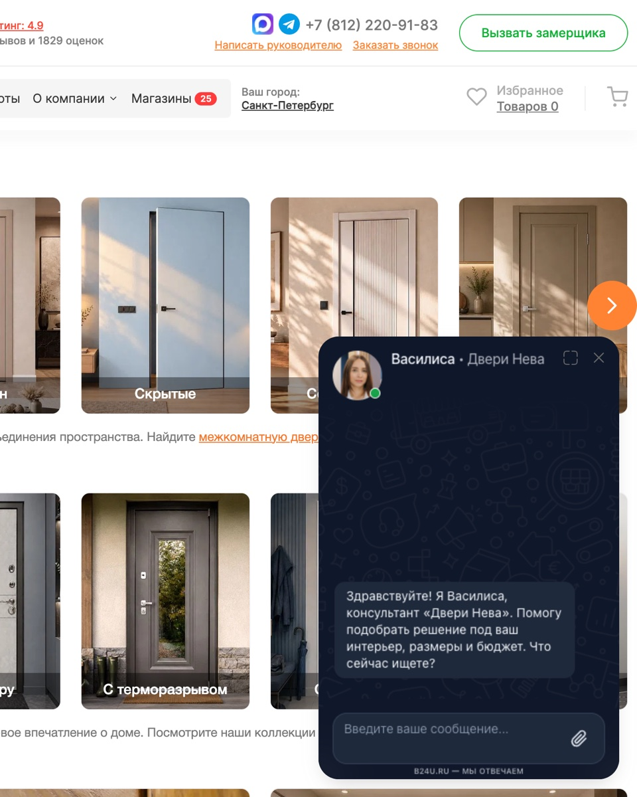
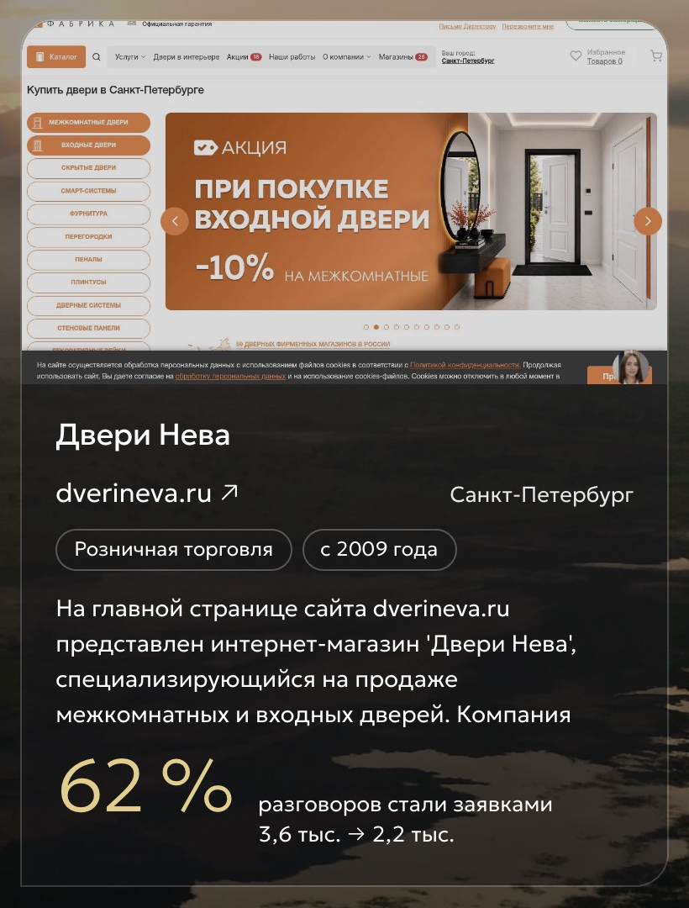
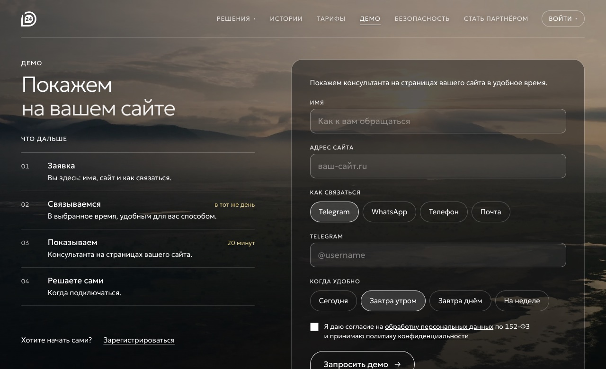
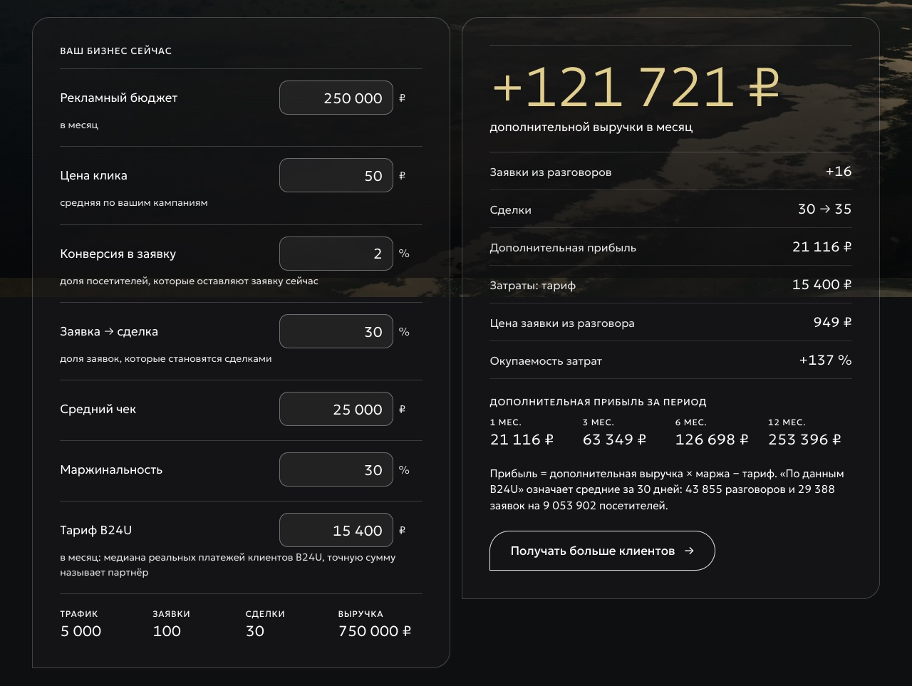
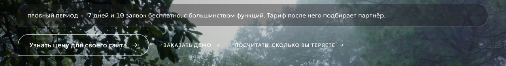

Холодная цепочка из 5 писем: 71 лид, 23 Zoom и 7 оплат за 20 дней
B24U, ИИ-консультант для сайта ·
email-маркетолог ·
2026 год
7 оплатиз 565 холодных контактов за 20 дней
71 лидответили с интересом, 12,6% от базы
23 Zoomназначено за 20 дней
64%пробных периодов закончились оплатой: 7 из 11
Данные: CRM и сервис рассылки
Пять писем за 18 дней, в каждом свой оффер: Zoom-презентация, демо на сайте получателя, расчёт окупаемости или пробный период
Задача
Открыть для B24U холодный канал продаж: выводить владельцев и руководителей малого и среднего бизнеса на персональную Zoom-презентацию и доводить их до пробного периода и оплаты.
B24U делает ИИ-консультанта для сайта. Он отвечает посетителям в любое время, включая вечер и выходные, и передаёт заявку в CRM со сводкой разговора. Попробовать можно бесплатно: 7 дней и 10 заявок.
Главная цель цепочки: назначенный Zoom. На нём менеджер показывает ИИ-консультанта на сайте компании и считает, сколько заявок она теряет без него. Следующий шаг после Zoom: пробный период.
Гипотеза: если первое письмо начинается с триггера с сайта получателя, а каждое следующее приходит со своим оффером, один из офферов зацепит получателя, и он ответит. Дальше персональный диалог доведёт его до Zoom-презентации и оплаты.
Построение системы
Зона ответственности: весь канал от разбора продукта до передачи лида на презентацию. Сюда входили анализ продукта и аудитории, сбор базы, поиск триггеров, тексты цепочек, отправка и персональные диалоги с ответившими. Zoom-презентации проводил менеджер по продажам. Цепочек было несколько, в кейсе разобрана одна из них, и результаты посчитаны по ней.
Анализ
База и триггеры
Пример цепочки
Ответы и Zoom
1Продукт, аудитория и конкуренты
Анализ
База и триггеры
Пример цепочки
Ответы и Zoom
Перед запуском мы разобрали продукт, целевую аудиторию и конкурентов. По итогам выбрали сегмент и спроектировали цепочки: сколько писем, с какими интервалами и с каким оффером в каждом.
Сегмент: владельцы и руководители малого и среднего бизнеса, у которых на сайте есть форма заявки или обратной связи.
2База и триггеры
Анализ
База и триггеры
Пример цепочки
Ответы и Zoom
Базу собирали через нейросеть в режиме Research (глубокий поиск). По специальному промпту она искала B2B-компании нужного сегмента и проверяла их сайты. В базу попадали только компании с формой заявки или обратной связи и без онлайн-чата или ИИ-ассистента. Так набралось 565 контактов.
Для первого письма отдельный промпт искал триггеры. Нейросеть разбирала сайт каждой компании из базы и находила деталь, с которой можно начать разговор: особенность компании, её оффер, форму заявки или калькулятор.
Триггер шёл в первую строку письма, адрес сайта подставлялся автоматически.
Компания из базы
→
Анализ сайта по промпту
→
Триггер
→
Первая строка письма
3Пример цепочки: 5 писем
Анализ
База и триггеры
Пример цепочки
Ответы и Zoom
Письма уходили на 0, 3, 7, 12 и 18-й день, и цепочка останавливалась, как только человек отвечал. Каждое письмо заходит с нового угла, несёт свой оффер и заканчивается одним вопросом, на который легко ответить.
Прямо на Zoom ведёт второе письмо: к этому моменту получатель уже знает, что такое B24U. Остальные предлагают шаг с меньшим порогом входа: демо, расчёт окупаемости, пробный период. После каждого из них следующее сообщение выводило на Zoom.
Ниже одна из цепочек: её получила база из 565 контактов, и все цифры кейса посчитаны по ней. С теми, кто ответил на любое из писем, начинался отдельный диалог: следующие сообщения составлялись вручную под ответ конкретной компании.
ДеньТемаУголЦель письма
0Ответ клиенту в 23:40Повод и идеяВызвать интерес
362% диалогов заканчиваются заявкойЦифра и сомневающиесяНазначить Zoom
7Меньше звонков до расчётаВыгода для менеджераОтправить демо
12Расчёт для [компании]ДеньгиПосчитать окупаемость
18Не буду больше отвлекатьЗакрытиеПолучить ответ
Письма даны как шаблон. Подсвечено то, что подставлялось под каждого получателя. Рядом с письмами стоят скриншоты, которые подтверждают каждый оффер.
Письмо 1 · знакомствоОтвет клиенту в 23:40
День 0
[Имя], добрый день.
Зашла на [ваш сайт] и обратила внимание на [то, что заметили на сайте: форму заявки, запись онлайн, калькулятор].
Если человек пишет вечером или в выходные, ответ он, скорее всего, получит не сразу.
Мы в B24U делаем ИИ-консультантов для сайтов. Консультант отвечает посетителям в любое время и передаёт заявку в CRM со сводкой разговора.
Интересно было бы посмотреть, как он отвечал бы на вопросы клиентов [название компании]?
Анна Соколова, менеджер B24U
Письмо 2 · Zoom62% диалогов заканчиваются заявкой
День 3
Двери Нева из Петербурга подключили консультанта на сайте. По данным платформы, 62% разговоров с ним заканчиваются заявкой.
Форма на сайте ловит тех, кто уже решил. Те, кто ещё сомневается, нередко уходят без заявки. Консультант встречает сомнение до формы и передаёт менеджеру диалог с тем, что человек уже спросил.
Завтра в 12:30 покажу в Zoom на примере вашего сайта, 3 минуты?
Анна Соколова, менеджер B24U
dverineva.ru

Пример из письма 2: консультант Василиса на сайте «Двери Нева» сама начинает разговор и спрашивает, что ищет посетитель
b24u.ru/stories

Цифра из темы письма взята из публичного кейса в историях клиентов B24U: 62% разговоров с консультантом стали заявками
Письмо 3 · демоМеньше звонков до расчёта
День 7
Чтобы посчитать заказ, менеджеру обычно приходится сначала уточнять детали: [например, размеры, сроки, комплектацию].
Консультант на странице делает это за него: задаёт пару вопросов по задаче, собирает параметры, а менеджеру передаёт готовый диалог для расчёта. Звонить с нуля не нужно.
Прислать ссылку на демо по [ваш сайт], чтобы вы сами попробовали?
Анна Соколова, менеджер B24U
b24u.ru/demo

Страница демо B24U: консультанта показывают на страницах сайта клиента
Письмо 4 · расчётРасчёт для [компании]
День 12
Могу посчитать, окупится ли консультант у вас.
Нужны четыре цифры: рекламный бюджет, цена клика, конверсия в заявку и средний чек.
Из них видно, сколько заявок сейчас теряется и какая прибыль получится за 1, 3 и 6 месяцев.
Посчитать на ваших цифрах?
Анна Соколова, менеджер B24U
b24u.ru/calculator

В калькуляторе B24U те же исходные данные, что мы просили в письме 4: бюджет, цена клика, конверсия и средний чек
Письмо 5 · пробный периодНе буду больше отвлекать
День 18
[Имя], не буду больше писать, если тема неактуальна.
Если интересно, ответьте одним словом: пришлю демо по вашему сайту или назначим короткий Zoom. Попробовать самим можно и бесплатно: 7 дней и 10 заявок, без карты.
Анна Соколова, менеджер B24U
b24u.ru/#pricing

Запасной шаг из письма 5: пробный период 7 дней и 10 заявок
4Ответы и Zoom
Анализ
База и триггеры
Пример цепочки
Ответы и Zoom
Каждый ответ с интересом мы считали лидом. Цепочка для этого контакта останавливалась, и начинался персональный диалог: ответы на вопросы, демо или расчёт и вывод на Zoom-презентацию. Презентацию проводил менеджер по продажам.
Ответ с интересом
→
Персональный диалог
→
Zoom
→
Пробный период
→
Оплата
Результат
За 20 дней холодная база дала 7 платящих клиентов, гипотеза подтвердилась.
565контактов получили цепочку
71лид: ответили с интересом, 12,6% от базы
23назначенных Zoom
11пробных периодов
7оплат
Цепочку получили 565 контактов, 71 компания ответила с интересом. Это 12,6% от базы.
Назначено 23 Zoom: созвон получил почти каждый третий лид.
11 компаний перешли в пробный период, 7 из них затем оплатили. Это 64%.
В среднем одна оплата на каждые 80 холодных контактов.
Данные: CRM и сервис рассылки
Почему это сработало
Триггер с сайта в первой строке
Письмо начиналось с детали, которую нейросеть нашла на сайте компании. Его читали как письмо, написанное для этой компании, и отвечали на него.
Свой оффер в каждом письме
Одним хватало демо, других цеплял расчёт на своих цифрах, третьи сразу соглашались на Zoom. Каждый оффер дальше вёл к Zoom через персональный диалог.
Короткие письма и один вопрос
Письмо читается за полминуты, ответить можно одним словом.
Результат во многом объясняется продуктом: задача, которую решает B24U, актуальна для бизнеса. Свою роль сыграла и качественная база: письма уходили действующим компаниям с живыми сайтами.